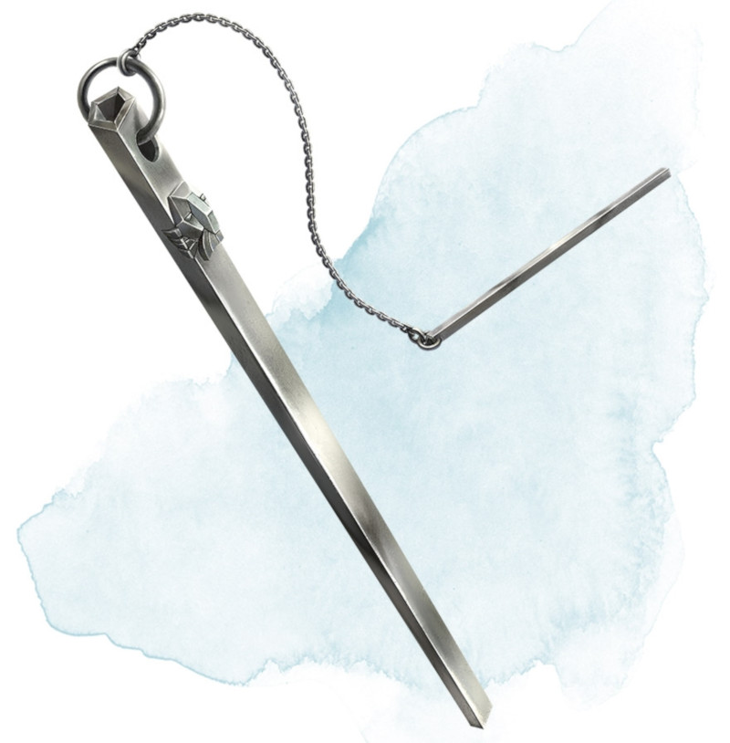

Chime of Opening
Wondrous item, rare
This hollow metal tube measures about 1 foot long and weighs 1 pound. You can strike it as an action, pointing it at an object within 120 feet of you that can be opened, such as a door, lid, or lock. The chime issues a clear tone, and one lock or latch on the object opens unless the sound can't reach the object. If no locks or latches remain, the object itself opens.
The chime can be used ten times. After the tenth time, it cracks and becomes useless.
The chime can be used ten times. After the tenth time, it cracks and becomes useless.
Dungeon Master´s Guide (SRD)
